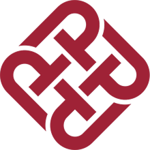

潘宜然
天津大学 · 计算机科学与技术 · 大一
点击任意一项展开 · 按 Esc 返回
天津大学 · 计算机科学与技术 · 大一
点击任意一项展开 · 按 Esc 返回
✦ 你好，欢迎来到我的主页
你好，我是潘宜然——天津大学计算机科学与技术专业的大一新生。 我在这里记录学习、兴趣和小作品，也在一点点把想法变成看得见的网页。
✦ 关于我 · ABOUT
 ✦ 正在学习 HTML / CSS
Vibe Coding 探索中
✦ 正在学习 HTML / CSS
Vibe Coding 探索中
我是潘宜然，天津大学计算机科学与技术专业大一学生。 我喜欢「把想法变成看得见的作品」——最近在用自然语言和 AI 协作， 把脑海里的画面快速搭成真正能打开的网页。
看看我的作品 →✦ 我的世界 · MY WORLD
在天津大学读计算机的这一年，我把大部分时间花在三件事上——敲代码、啃算法、认识数据与 AI。 下面这几幅画面，大概就是我每天真正面对的东西。


✦ 我的作品 · MY WORKS
这里放的是我真正动手做出来的东西——不是练习题的答案，而是能打开、能点、能玩的作品。 目前还只有一件，但它是我和 AI 一起，从一句需求描述开始搭起来的第一个。
一只鹈鹕蹬着自行车一路向前：车轮在转、曲柄在转、双腿贴着踏板一圈圈蹬， 身体还随着踩踏轻轻起伏；脚下是滚动的高速路虚线，身后扬起一小团尘。 下面的预览可以直接玩——拖动滑块能随时加速或减速，按暂停就停在当前这一帧。
✦ 这些作品是怎么来的
页面里的作品都是我先把想要的效果讲清楚，再和大模型一轮轮对话、不断调整改出来的， 最后自己动手过一遍细节。下面记下每件作品对应的生成模型。
DeepSeek-V4-Flash-Vision-Exp✦ 求学经历 · EDUCATION
三段求学路：广州的小学与中学，深圳的大学。
2026-至今

目前本科在读（大一），学的是计算机科学与技术——正在打牢编程与算法的基础， 也想把技术用在真正有用的地方。
2020-2026
六年中学时光在这里度过，打牢了各科基础，也慢慢养成了对学习和探索的兴趣。
2014-2020
求学的起点。在这里学会读书、学会和同学相处，也留下了最无忧无虑的六年。
✦ 技能与兴趣 · SKILLS
兴趣标签
常用工具
✦ 留个反馈
反馈不会公开，只有我一个人能在后台看到。 指出一个你看不懂、不好找，或看着不舒服的地方就可以。